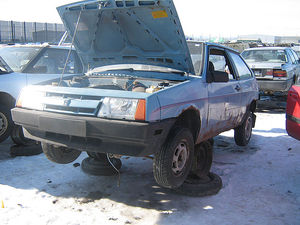
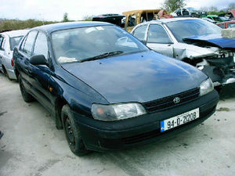

Desguace
 De: La Frikipedia, la enciclopedia extremadamente seria.
De: La Frikipedia, la enciclopedia extremadamente seria.
| De la serie ciudades del mundo:
|
| Desguace
|
|
|
|
| (Bandera)
|
(Escudo de armas)
|
|
| Topónimo oficial
|
Desguace
|
| País
|
España por lo menos
|
| Código postal
|
La del polígono donde esté
|
| Superficie
|
desde la entrada hasta las verjas
|
| Altitud
|
pisos de 3 coches por lo menos
|
| Distancia
|
A pocos km de la capital.
|
| Fundación
|
Cuando los coches hicieron sus primeros destrozos
|
| Población
|
7293 coches y 2 perros guardianes.
|
| Gentilicio
|
Chatarrero.
|
| Alcalde
|
El coche del alcalde, lógicamente.
|
| ¡Chollazo, tubos de escape a mitad de precio!
|
Típica ciudad fundada a principios del siglo XX al lado de la capital. Su población se basa en coches jubilados, por lo que se comprende que no hay trabajo para ellos, sin embargo, la pobación no disminuye por la falta de trabajo y cada día suele llegar un nuevo vecino víctima de alguna hostia rotura irreparable o simplemente por el paso de los años.
Historia
A principios del siglo XX los coches inserbibles empezaban a hacerse abundantes, por lo que se creó una ciudad nueva a modo de centro para la tercera edad, pero para coches totalmenete.
Las ciudades veian la necesidad de implantarlo y es un lugar no solo para jubilar coches, los que quieran volver a su vida de trabajo y estén en buen estado pueden volver a las carreteras comprandolos a un precio de lo mas económico, aunque corres el peligro de que te duren 3 meses.
Es un lugar excelente para comprar piezas de segunda mano a un precio bien barato. Actualmente hay muchos de estos en España con muchos ejemplares exoticos dispuestos a prestarte piezas y los coches enteros.
Coches típicos de desguace
- Citroën CX
- Citroën AX
- Ford Scorpio
- Renault Laguna
- Citroën GS
- Simca 1000 (conocido como el coche que no se puede hacer el amor)
- Opel Astra
- Rover 25
- Talbot Horizon
- Forti-Ford
- Yugo 45
- Peugeot 309
- Citroën BX
- Opel Ascona (Asco)
- Peugeot 205
- Lotus F1 Racing
- Rover 420
- Ford Sierra
- Talbot Samba
- Lada Niva
- Seat Toledo
- Opel Senator
- Toyota Carina
- Citroën C15
- Coloni Racing Cars
- Mercedes clase E
- Volkswagen Golf
- Audi 80
- Renault 21
- Talbot Solara
- Seat Málaga
- Peugeot 104
- Ford Escort
- Fragoneta
- Renault 19
- NSU RO80
- Seat Ritmo
- Peugeot 106
- Talbot 150
- Renault 7
- Renault Clio
- Seat Ibiza
- Mitsubishi Carisma
- Suzuki Vitara
- Lancia Delta
- Toyota Corolla
- Seat Ronda
- Alfa Romeo Sprint
- Ford Fiesta.
Esos son los basiquitos.
Piezas de repuesto que se hayan en los desguaces
 Un cuidadano de la ciudad llamado
Lada Samara nos ofrece una imagen de su visita al hospital del desguace.
- Asientos
- Junta de la Trocola
- Llantas
- Tubos de escape
- Radiadores
- Volante
- Llaves (con suerte)
- Frenos
- Transmisiones
- Amortiguadores
- Suspensión
- Faros
- Culata
- Matrículas
- Puertas
- Cristaes
- Neumáticos
- Motores
- Cuentakilómetros
- Logos y emblemas
- Tuercas
- Tornillos
 Este ciudadano es uno de los que mejor se conserva.
- Pobres
- Parachoches
- Parabrisas
- Limpiaparabrsas
- Limpiafaros
- Picaportes
- Salpicaderos
- Tapines
- Gasolina
- Gasoil
- Frenos de mano
- Palanca
- Pedales
- El Stereo
- Ventanas
- Droga (dentro de las puertas)
- Batería
- Motor de arranque eléctrico
- Alfombrillas
- Ruedas de repuesto
- Pistones
- Lo olvidado en la guantera
- La guantera misma sin ir mas lejos
- Alternador
- Su respectiva correa
y etc
Tipos de desguace
- Pueblo: Pequeño desguace en el que sus coches caben todos apelotonados como si de un parking se tratase.
- La gran ciudad: Es un gran desguace en el que se forman montoneras de coches tan tremendas que su altitud puede considerarse un rascacielos de esa ciudad.
- Sin calles: Los coches están a izquiera y derecha de la ciudad, que queda dividida en dos solo por la calle del centro.
- Laberintico/con calles: Gran ciudad en la que te puedes perder facilmente debido a las montañas de coches que hay formando calles.
- Con cementerio: Aquí no están solo los coches jubilados, hay una máquina en la ciudad en la que los coches mueren y se convierten en amasijos de hierro, quedando totalmente inutilizables. De ellos nacen coches nuevos. Este es un buen ejemplo
- Carcel: Aquí la policía retiene a los coches de los ladrones y asesinos.
- Centros Autorizados de Tratamiento para vehiculos fuera de uso (C.A.T.V.): denominación actual para los antiguos y conocidos generalmente como desguaces de vehículos. Desde la entrada en vigor en 2004 de la ley sobre la gestión de vehículos al final de su vida útil, se exige que los propietarios de vehículos que pretendan desprenderse de los mismos, lo entreguen obligatoriamente en un centro autorizado de tratamiento, o en una instalación de recepción de vehículos regulada y autorizada por medio ambiente y por la Dirección General de Tráfico.
 Transporte Transporte 
|
|
|
Autor(es):
- Conan
- Butters2
- ADrIaN1996
- Jesus el mejor
- Alidesgu
- Petras14
- Aicika
- Juan Fernandez Soria
Frikipedia 2005-2016, Licencia
GFDL 1.2 - Extraído por FrikiLeaks